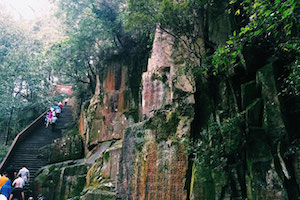

Sanfang Qixiang
Facts
- Name: Sanfang Qixiang, Three Lanes and Seven Alleys, Sanfangqi Alley Tourist Center
- Chinese Name: 三坊七巷
- Construction: Initially built in the Jin Dynasty (265-420), shaped in the Tang Dynasty (618 - 907) and Five Dynasties and Ten States (907 - 960) and prospered in the Ming Dynasty (1368-1644) and Qing Dynasty (1644-1911).
- Area: 40 hectares (100 acres)
- Location: In the center of Fuzhou City, near the city's main stems, the 817 Road, White Horse Road, and TongHu Road.

A famed historical and cultural street in Fuzhou
Sanfang Qixiang is the only remaining old quarter of Fuzhou. Preserving over 200 ancient folk houses mainly from the Ming and Qing dynasties, it is reputed as the “Architecture Museum of the Ming and Qing Dynasties”. Since its construction in the Jin Dynasty, a great many of scholars have lived here. Therefore, Sanfang Qixiang is also known as the origin of history and culture of Fuzhou.
Sanfang Qixiang consists of three lanes, seven alleys and an axis street named Nanhou Street. The three lanes including Yijin Lane, Wenru Lane and Guanglu Lane are to the west of Nanhou Street. The seven alleys are located to the east of Nanhou Street, which are Yangqiao Alley, Langguan Alley, Ta Alley, Huang Alley, Anmin Alley, Gong Alley and Jibi Alley.
Drum Hill (Gushan)
Facts
- Name: Drum Hill, Gushan
- Chinese Name: 鼓山
- Location: At the north bank of Min River (Chinese:闽江), 8 kilometers east of downtown Fuzhou City, Fujian Province.
- Tickets: free for climbing the mountain, CNY 40 for Yongquan Temple; CNY 10 for 18 Scenes; CNY 50 for round trip cable car, and CNY 35 for one way cable car.
A best-known beauty spot in Fuzhou City
With a main peak of 925 meters above sea level and a total area of 48 square kilometers, Drum Hill or Mount Gu is the most famous beauty spot in Fuzhou City. Listed into the national scenic spots in China, Drum Hill features numerous historical sites and attractive natural beauties. Apart from the central site of Yongquan Temple, there are over 20 scenes in the east part of the hill, dozens of spots in the west, over 50 in the south and 45 in the north. Most of the scenic spots are rocks in diverse postures which are the results of long-tem denudation, weathering, collapse and accumulation in the historical development. Besides, many inscriptions on precipices left in past dynasties are also the highlights in the hill.